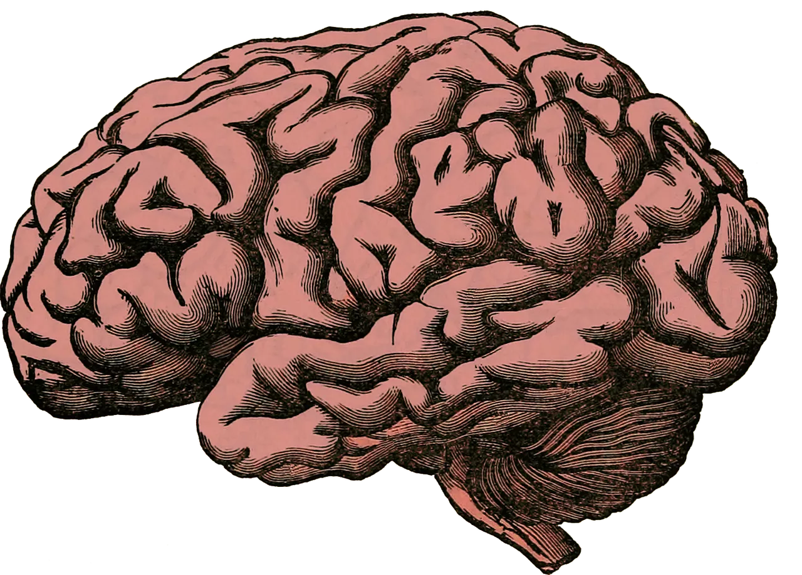

Karol, um site sobre a pessoa mais incrível que conheço
Bom, todos sabemos que
Todos reconhecem que sou profundamente admirador e apaixonado por uma pessoa chamada Karol. Suas atitudes, embora diversificadas, têm o poder de me cativar de maneira extraordinária. Karol é um ser complexo, e ao mesmo tempo, incrivelmente compreensível. Sua essência paradoxal é um reflexo da própria natureza, e meus olhos naturalmente se voltaram para essa estrela fenomenal chamada Karol. Ela é uma eterna estrela que irradia luz e ilumina meu coração, repleto de paixão por ela.
Neste site
Você se tornará o espectador de uma carta de amor, algo que se assemelha a um registro da pessoa mais amada, a mais bela, e aquela que eu amo profundamente.